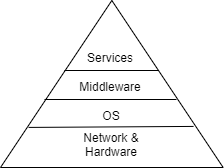
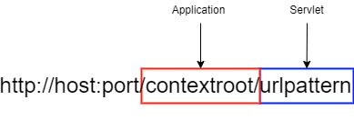
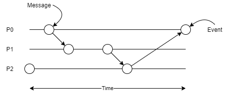
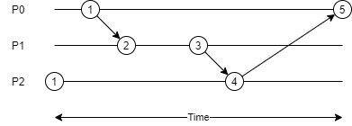
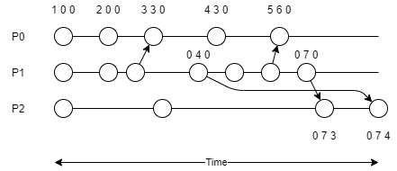

Distributed Systems
A distributed system is one in which components at networked computers coordinate their actions only by passing messages.
Characteristics of Distributed Systems
Distributed systems want to share resources.
- Concurrency: distributed systems are highly concurrent, and share each other’s resources. “I can do my work, and you can do yours. We can share each others resources when needed.”.
- Global Clocks: distributed systems rely on close cooridnation to efficiently send and respond to messaging between components. This depends on a shared understanding of time in which there are limits to the accuracy of clock synchronization.
- Independent failures: distibuted systems may fail in a way not immediately knwon to the rest of the system, failing independantly. It is important to for such systems to be “fault tolerant”.
- Transparency: although made of many shared resources a distributed system must interact with other systems as one computer, and appear as so to external clients.
- Scaling: the architecture of distributed systems should respond as well as possible to new nodes and components. Introducing new clusters et al. should not slow down the system.
- Heterogeneous: Components are not all the same, and vary in many ways - including vendors.
Internet Protocols
Distributed systems use internet protocols to coordinate messages. The protocols used are independant on the OSI model, and often send via IP through a secondary protocol, such as TCP.
Internet Protocol: Repsonsible for routing packets and is limited in length. Additionally the IP v4 protocol resevres 64 bits for addresses, whilst v6 reserves 128.
Transmission Control Protocol: Sits a layer above IP, Capable of subdividing data into packets and reassembling them in order. The extra reliability measures introduce overhead to TCP.
- Establishes bidirectional connections
- Includes packet checksums
- Controls transmission rate
User Datagram Protocol: Encapsulares data into IP packets called datagrams. There is no connection established, and this is why UDP is known as connectionless, meaning that packets are sent to the destination whether it is open or not. This is the main reason UDP has negligable overhead and is a “fast” communication.
Note that IP can only route between computers, and inter-process communciation requires TCP or UDP. All communication needs to be sent to a port, so that the client (and host) can maintain multiple streams of communcation at once. Applications use a socket construct to attain a port, and bind a data stream to it. Hence a port exists within the host os whilst a socket is an abstraction allowing interfaces.
In general a server and a client will open a socket. The client will connect to the port of the server socket, whilst the server socket will actively listen for any incoming requests (TCP) or accept data on the sockets input stream (UDP). When running via the TCP protocol the server will track each connected socket, and respond individually (bi-directional communication).
(server)
socket <- create socket
loop:
if socket.listen:
thread <- create thread
thread.run:
obtain streams from client socket
read/write to streams
close streams
close client socket
(client)
socket <- create socket
obtain streams from socket
read/write to streams
close streams
close socket
Architectures
…topic reserved for future…
Client-Server

Peer to Peer
In a peer to peer architecture clients are also servers, any node can request a service from another, which can then do the same (aka proxy).

System Models
Models describing the design of and implementation of distributed systems
| Model | Description |
| Physical | Representation of hardware elements that abstract away specific details of the computer and network technologies used within the system |
| Architectural | The sturcture of the system in terms of seperated components and their inetrrelationships |
Architectural Models
Architectural Models answer:
- What entities exist in the system?
- What communication paradigm is used?
- What roles do they have in the overall architecture?
- What is their placement?
From a systems-level perspective all coounicating entities are processes, however from a programming persepective these could be ojects, software components, or web services. The communication between these is supported by a paradigm, which could include:
- Interprocess communication
- Remote Invocation
- Remote Procedure Calls
- Remote Method Invocation
Paradigms that do not require a sender to know of the receiver exist to decouple systems. This is known as third party communication and include publish-subscribe and message queue systems.
Architectural Patterns
Design patterns used in architectural models reffered to as architectural patterns.
Layering
Partitioning a system into layers where each layer can interact with the layer below it (without knowing it’s implementation) but none further beneathe - offering software abstraction.

Hypertext Transfer Protocol
Http is a request-reply protocl on the application layer. Sitting atop TCP it can reuse TCP connections over multiple requests to a server.
- HTTP is stateless, no client information is saved between requests and each request is independent. All client information is setn with each request.
- As it is stateless sessions are not stored in the protocol
Requests appear in the form (all {xxx} are fields replaced by an appropriate type):
{METHOD} {URI} HTTP/{VERSION}
HOST: {DNS NAME}
{HEADERS}
{BODY}
- Within a URI parameters can be sent following a
?as key-value pairs. They can not contain special HTTP characters, and must be url-encoded.
Responses appear in the form:
HTTP/{VERSION} {STATUS CODE(3 digits)} {STATUS MESSAGE(string equivelant)}
{HEADERS}
{BODY}
Headers are written in the form:
{HEADER NAME}: {VALUE 1}, {VALUE 2}, {...}
Session Tracking
Web servers employ various techniques to track sessions as a result of HTTP being stateless. This invovles including session IDs with client requests which map to a session stored on the server. This can be done using many techniques
| Session Tracking | Description |
|---|---|
| Cookies | Persistent storage placed on the client containing the session ID, as instructued by a server’s response |
| URL rewriting | Server responses re-write all URLs to include the session ID as a parameter |
| Hidden form fields | Hiding (making invisible) form fields that send the session ID as a field when submitted. Although this is rather unorthodox nowadays. |
Web Servers
Web servers are generally used to support the OSI layers underneathe applications and services. Handling protocols such as TCP and HTTP for developers.
Java EE uses servlets to respond to requests handled by a server. In general a servlet is responsible for one resource. Web servers implementing Java EE manage containers, which in turn manage servelts. Destroying and instantiating servlets as requestes are made - and often offer a load balancer - known as managed code.

Web servers will often implement session tracking, allowing services and applications atop to querry HTTP sessions without manually implementing session tracking techniques. Forwarding requests once inside the server (by a server resource etc.) is known as dispatching. This allows us to store state in the request and send this to another resource.
Java Beans are java objects that allow a request to store state when dispatched. They have no paramters in the constructor and provide methods to get and set fields within themselves. Beans are limited to per request, session, and application scopes.
Server Pages
Server pages are static HTML documents containing special elements capable of calling dynamic code.
Java EE uses JSP (java server pages), whilst other popular frameworks include ASP for .NET core.
Server pages allow servers to repond with dynamic content to a client, without manually writing HTTP responses. Server pages are translated and compiled into servlets during the build process - which means server pages are compiled into servlets (they have access to beans etc.).
- Server pages generally provide annotations or other language consturcts to define constants for the page to use. However an older pattern is to provide an external configuration file that the page reads.
Server pages are written as static HTML documents which are compiled into servlets, allowing code to be included in the source HTML, which is executed as code. Java EE calls their version of server pages JSP (Java server pages) but other popular frameworks exist. For example in .NET ASP & ASP core exist.
JSPs
JSPs use a variety of tags to perform certain actions. Server pages can use beans and request objects just as a servlet could.
| JSP Element | JSP Syntax |
|---|---|
| Comment | <%-- --%> |
| Directive | <%@ page ... %> <%@ include ... %> etc. |
| Declaration | <%! ... %> |
| Expression | <%= %> |
| Scriptlet | <% ... %> |
They also have access to in built servlet objects:
- request
- response
- out (JspWriter)
- session (HttpSession)
- application (ServletContext)
- config (ServletConfig)
- pageContext
- page (reference to compiled servlet)
Server pages can access beans using the following tags:
<jsp:useBean id="beanName" class="beanPackage.beanClass" scope="beanScope"/>
<jsp:setProperty id="beanName" property="propName" value="value"/>
<jsp:getProperty id="beanName" property="propName"/>
Furthermore custom tags can be defined, the JSTL (JSP standard tag library) includes many. These tags are associated with a prefix (a prefix appears where jsp was written above), and the page must declare the location of each tags definition.
| Library | Prefix | URI |
|---|---|---|
| Core | c |
http://java.sun.com/jsp/jstl/core |
| XML | x |
http://java.sun.com/jsp/jstl/xml |
| Format | fmt |
http://java.sun.com/jsp/jstl/fmt |
| SQL | sql |
http://java.sun.com/jsp/jstl/sql |
| Functions | fn |
http://java.sun.com/jsp/jstl/functions |
# use core JSTL directive
<%@taglib prefix="c" uri="http://java.sun.com/jsp/jstl/core"%>
Databases
Scaled applications look to highly optimise the application models.
Databases are teh defacto means to store an applications model, they may be relational, time-series, noSQL, or even maps/memory databases. Connecting to a database is resource intensive, hence in scaled applications we do not want to create a connection to the database manually. Instead we use a connection pool, which are collections of connections allocated to a database on a server which we can open and close without creating or destroying a new connection. As such connection pools have a limited number of connections.
- Pools create connections when a server starts up
- Application servers generally include a connection pool and pool managers
Furthermore we can utilise naming services to directly inject (resource injection) connections as data sources into distributed objects. Naming services allow connection pools to be named on disk, and can inject a data source (connection) directly into an object.
Further optimisations can even be made to SQL or other database queries. Prepared statements allow us to construct queries with wild cards and optimise the resources used to access said tables etc. on the database at compile time. Wildcards can then be replaced at runtime.
ORM
Object relational mapping
Instead of directly executing queries it is common to map the relationships between entities in a databse to objects, and then use a persitence service to serialize and deserialize objects to the database.
Java EE incorporates an ORM and persistence API by default, called the JPA.
Time
Synchronising clocks and identifying the system state with time inconsistencies.
Every processor has an internal clock which is not guaranteed to be synchronised with others in the system. For processors running at high speeds this can cause wasted clock cycles. Clocks can not be perfectly synchronised but their are algorithms that can give the system one representation of a plausible time between all computers. Timestamps can be coordinated within 10ms of UTC using the network time protocol.
As such distributed systems have no absolute time, instead time is used as a logical sequence. An order in which events occurred.
Christians’ Algorithm
Incorporating a time server
One computer acts as a time server, when each other processor wants to query the time they send a request to this server. The round trip time is measured from the point the request is sent to the time when the response is received. One leg (half) of this trip time is added to the returned time to account for how long the time query took. Using this method time should be consistent to the time servers clock.
Berkley Algorithm
Time servers using averaging techniques between all times to form an expected real time.
The time server is called a “time master” in such the Berkley algorithm. This processor sends a broadcast to all processors, querying their time. One leg of the round trip adjusts the returned times for each processor and the average of all times is calculated (including the masters’ time). This is the “expected real time”. Each request from other processors send their own timestamp and is checked against this time, it is then adjusted if it is faster or slower than the average time.
Happened-Before Diagrams
A happened before diagram can map events on each processor and messages sent between processors on a timeline. This creates an order of events, even though the exact time is unknown.
- Any event that sends a message must happen before the event receiving it.
- This order of events is only a partial order.

Lamport Timestamps
A timestamp used to count events, attempting to create an order of events over multiple processes
A lamport timestamp counts events on each process, when a timestamp is received with a message that process ensures it’s counter is greater than the received counter.

Vector Timestamps
A multi-dimensional lamport timestamp
Vector timestamps keep a lamport timestamp for each process in a vector. When a vector is smaller in all dimensions than another it is guaranteed to have happened before the other.
- Lamport timestamps are updated independent of one another, as shown below.

Global Snapshots
The state of all processes at some point in time including any messages in transit.
A snapshot shows a plausible state of the system at some point in time, it is not guranteed to have occurred. But based on the messages and events between processes it is vaible that it was.
- Used for logging
- Capable of restoring a system
- Increases in reliability
A snapshot can be taken via a cut. A cut partitions events (as seen in a happened-before diagram) into two sets, those that happened after the cut and those before the cut. A cut is called consistent if \(\forall (e \rightarrow e\prime) \implies (e \land e\prime) \in S\) (the receive event and request event belong in the same partition).
Chandey Lamport Algorithm
An algorithm to take a global snapshot.
Every process maintains a list of messages for each neighbour. When a marker message is recieved from a neighbour a process captures it’s state, and continues to populate each list every time a message is sent to that process. When it’s own state hase been captured a marker message is broadcast to all neighbours. Once a marker message is received from a neighbour whilst the given process is recording, that neighbour is said to be complete and the given processor stops capturing messages sent to that neighbour. Once a process stops monitoring messages to all neigbours it sends back it’s local snapshot to the intiator.
- A neighbour is a process able to directly communicate with another.
- The initiator is the first process to broadcast a marker message.
- This assumes messages arrive in FIFO order
- This also assumes every processes is a neighbour of every other.
As a result the Chandey Lamport algorithm can list all messages in transit during a snapshot.
if m is marker:
if not selfComplete:
capture current state
selfComplete <- TRUE
broadcast marker to each neighbour
neigbourComplete[sender] <- TRUE
if selfComplete and every neighbourComplete:
send snapshot to initiator
else:
if selfComplete and not neighbourComplete[sender]:
neigbours[sender] append m
process m
Global State Predicates
Assertions made about the state of a system.
Predicates are statements made about a system, which we assert to be true or false. Some examples include:
- Has algorithm
xfinished? - Is system
xin a deadlock? - Does object
xhave any references?
Predicates can be either stable or unstable. Stable predicates can never change back to false once being asserted as true, but unstable predicates can fluctuate between true and false at any time.
An important algorithm in global state predicates are diffusion algorithms.
| Diffusion Algorithms |
|---|
| Algorithms that start on one process and start jobs on many other processes. When a job is active it can send outbound messages, when a job finishes it becomes passive. Once all jobs are passive the algorithm terminates. |
Dijkstra-Scholten Algorithm
An algorithm to determine if a diffusion algorithm is complete.
A Dijkstra-Scholten algorithm builds a tree of all active processes in an algorithm where the root node is the first active process. When a process activates another process it adds it as a child node if it does not already exist in the tree. Nodes are removed once they have only passive children and once the tree is empty the algorithm is said to be complete.
Detecting Deadlocks
Deadlocks occur when a process depends on another process to finsih, yet that process has either a trasnitive or direct dependency on the initial process. Hence the process, and any others involved, perpetually wait on each other to finish.
A wait-for graph can be built to model the dependencies between processes. If the graph becomes closed a system is possibly in deadlock. One algorithm to detect this is the Marzullo-Neiger algorithm.